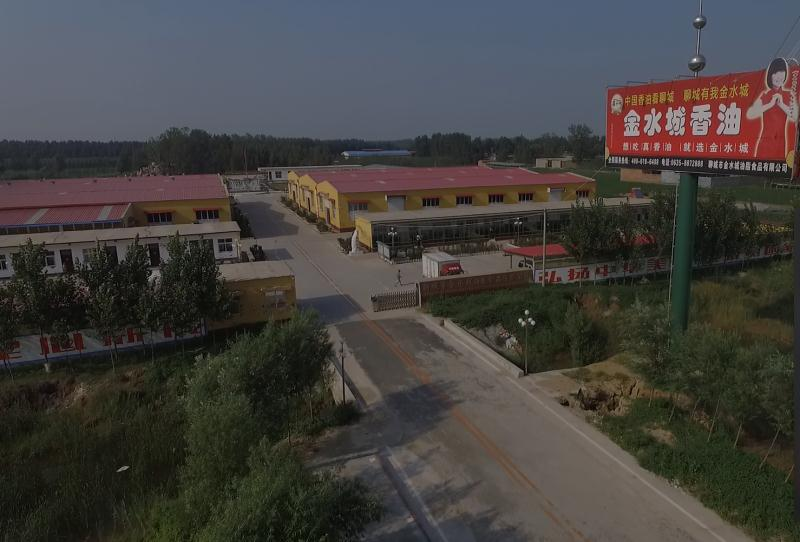

关于我们

公司介绍


聊城市金水城油脂食品有限公司前身为莘县邹巷代林香油厂,成立于1991年，2005年迁至美丽的江北水城——聊城。公司成立以来，我们以质量求生存，以信誉求发展，只做真香油，一直处在高速发展中，产品不断获得国家和社会的认可。2006年荣获全国旅游博览会金奖；2008年荣获中国质量万里行跟踪产品，被评为中国十大知名品牌；2010年被商务部授予中国诚信企业。
为了响应市政府东融西借的发展战略，随着公司不断创新发展的加快，公司创始人钱董有了更高更远的愿景规划： 公司决定在美丽的古漯河东侧，投资2000万元建设面积达50余亩的现代化工业园，计划2016年8月全部完工，年销售收入8千万左右，预计纳税100万，带动就业300余人，工程分两期逐步实施。
一期工程在聊城高新区—韩集乡政府的大力支持下，规划建设专业生产香油、麻汁、花生酱的现代化的厂区，厂区大道宽阔整洁，整个公司气势磅礴；车间完全按照科学的工艺流程量身设计，符合国家食品级GMP标准要求，引入5S生产管理，车间设有走廊，便于观光，香油的整个工艺流程:除尘、水洗、炒制、石磨、兑浆、浮油、过滤、包装等程序，一切尽收眼底。
公司定制南山红石矿物质石磨100盘，并从山东青州定制三套全自动灌装设备，年加工芝麻1500余吨，公司将是目前中国石磨最多规模最大的香油生产基地，中国香油看聊城，聊城有我金水城，做中国香油的龙头企业，带动当地经济，能安置120余人就业，造福一方百姓。
公司将回收的香油渣饼作为有机肥，提供给当地农户，种植有机芝麻，成立有机芝麻合作社，绿色环保，其生长过程中完全不用传统的化肥农药，采摘的是真正的绿色有机芝麻，公司并以高于市场30%的价格收购，以保证有机芝麻油的质量。并聘请当红明星代言，提高产品知名度和美誉度。
公司与中国科学院农科所合作，在我公司成立芝麻研究所（已与中科院初步达成合作意向)，致力于提高芝麻香油行业的整体水平。
一期将于2015年4月正式竣工投产，随着一期工程的竣工，公司二期工程即将启动，我们将：“以生产加工有机绿色食品为己任，为解决社会食品安全而奋斗！”二期工程将致力于解决食品安全这一关乎民生的社会问题而设计规划。
成立农村种植合作社，种植真正绿色健康的万亩有机小麦、稻谷， 生长过程中完全不用传统的化肥农药，用香油渣饼作为有机肥。再次定制有机矿物质石磨石碾200盘，采用原始的石磨磨面、石碾碾米，返璞归真，生产有机、绿色、营养健康的面粉，让中国消费者吃到真正原汁原味的石磨面粉、石碾小米。
二期工程将打造万亩有机芝麻、小麦、小米种植园区，采用基地加农户的模式，形成产供销一条龙。全部采用远古时代的石器工具，用非物质文化传统石磨工艺生产，形成追寻远古工艺、感受石器时代的探秘圣地。200盘石磨、100石碾，整齐划一，前后左右成行成列，气势恢宏，场面壮观，成就中国规模最大的石磨生产基地。GMP生产车间根据工艺流程设计观光走廊，采用特殊透明玻璃墙处理，让参观者一览整个工艺流程，看的清楚、想的明白、吃的放心，铸就集观光、考察、旅游于一体的现代化企业。
工程2016年8月全部竣工投产后，我们注定会是聊城食品行业一颗冉冉升起的明星，必将成为聊城现代化的农业龙头企业。